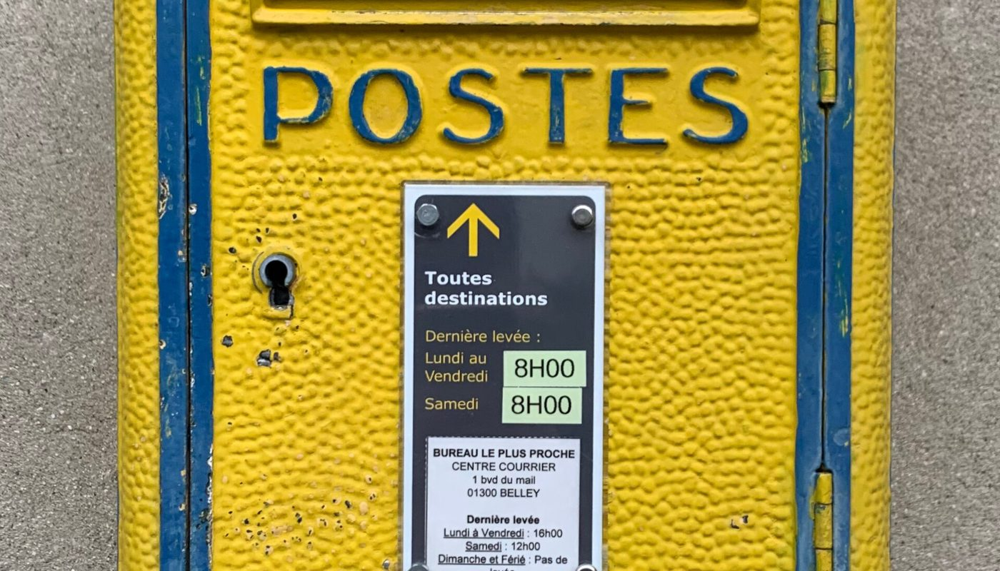

Indépendant · citations publiques reproduites telles quelles · relevés des 1er et 2 oct. 2026
Résiliation envoyée par courrier recommandé, aucune réponse : que faire

Vous avez envoyé la résiliation par courrier recommandé. Le recommandé est bien arrivé. Et il ne se passe rien : pas de confirmation, pas d'arrêt des prélèvements, parfois plus un interlocuteur au téléphone. C'est une situation très documentée — nous avons trouvé un avis public qui la décrit presque mot pour mot, avec la réponse de l'éditeur en dessous. Un contrat ne se résilie pas par un courrier seul : voici ce que disent les textes, l'ordre exact des opérations, et un courrier prêt à envoyer qui ne laisse aucune porte de sortie.
Aucun lien affilié sur cette page — voir comment ça marche Le courrier se génère dans votre navigateur, rien n'est envoyé
En bref
- Votre courrier est une demande, pas une résiliation. Le code civil réserve la modification et la révocation d'un contrat au consentement mutuel, ou aux causes prévues par la loi (art. 1193).
- Ce qui rend la démarche opposable, c'est la preuve : avis de réception, numéro de suivi, date d'envoi, et surtout une confirmation écrite datée de l'éditeur.
- Le silence n'est pas un accord. Ne pas répondre n'a aucune valeur juridique d'acceptation : cela vous laisse au contraire une trace utile pour la suite.
- Révoquer le prélèvement n'est pas résilier. Cela arrête les encaissements, cela ne tranche pas le contrat — et la dette contractuelle, si elle existe, survit.
Fiche méthode — téléchargement immédiat
Résiliation par recommandé sans réponse : la procédure complète
Le modèle de mise en demeure + l'escalade en 4 étapes + le calendrier de preuve
- 6 étapes numérotées, dans l'ordre où il faut les faire.
- La checklist à imprimer et cocher au fur et à mesure.
- Les erreurs qui coûtent cher, et pourquoi.
- PDF de 3 pages — livré tout de suite après le paiement.
2 € — paiement par lien, sans compte à créer.
Obtenir la fiche — 2 €Si la fiche ne vous sert pas, dites-le : nous la retirons et vous êtes remboursé.
Le cas, tel qu'il a été publié
Cet avis public a été déposé le 29 juin 2026 sur le comparateur d'avis le plus consulté en France, à propos d'un éditeur français de logiciel de gestion. Nous le reproduisons tel quel, suivi de la réponse publique de l'éditeur publiée deux jours plus tard. C'est la situation exacte de cette page.
Ce que ce cas enseigne est contre-intuitif : la réponse publique arrive en deux jours, la réponse privée n'arrivait pas. Ce n'est pas un détail de communication, c'est le cœur du problème. Un éditeur qui ne répond pas à un recommandé reste très réactif quand l'avis est public — parce que l'avis public est un coût visible, et le recommandé non. Votre travail consiste donc à rendre votre démarche aussi visible et aussi datée que possible, par écrit, dès le premier envoi.
La première barre est un montant cité par l'auteur de l'avis, reproduit tel quel. La seconde n'est pas un montant supplémentaire : c'est le produit de la première par douze, et nous l'écrivons. Aucun autre chiffre n'est avancé sur cette page.
Ce que disent les textes, et ce qu'ils ne disent pas
Cette phrase est celle qui explique votre situation. Elle veut dire que votre courrier seul ne rompt pas le contrat : il constate votre décision et demande à l'autre partie de l'accepter. Tant que l'éditeur n'a pas confirmé, le contrat existe encore à ses yeux — et c'est précisément pourquoi la confirmation écrite est l'objet réel de votre démarche. Un courrier bien fait ne demande pas seulement « je résilie » : il demande une confirmation écrite datée, avec une date d'effet et un décompte.
Trois choses que les textes disent aussi
- Le silence ne vaut pas acceptation. En dehors des cas où la loi en dispose autrement, ne pas répondre à une demande ne l'accepte pas. Le silence de l'éditeur ne vous engage à rien — et il constitue une trace de plus.
- Le dispositif de résiliation en ligne ne vous protège pas si vous êtes un professionnel. L'article L. 215-1-1 du code de la consommation, obligatoire depuis le 1er juin 2023, impose une fonctionnalité de résiliation gratuite en ligne pour les contrats conclus par voie électronique ; il vise les consommateurs et les clients non professionnels. Une entreprise qui agit dans le cadre de son activité n'y est pas couverte par défaut. Il ne modifie d'ailleurs ni la durée d'engagement ni le préavis.
- Une clause ne peut pas tout. Le code de commerce sanctionne le déséquilibre significatif entre partenaires commerciaux (art. L. 442-1, I, 2°) : une clause de reconduction ou de préavis qui rend la sortie impossible se discute. C'est un argument à écrire, pas à brandir au téléphone.
L'ordre des opérations
L'ordre compte plus que la formulation. Faites-les dans cet ordre, et gardez une copie de tout ce que vous produisez : c'est cette pile de documents, et non votre colère, qui fera bouger les choses.
La partie que personne n'écrit
Dans le cas que nous avons lu, la réponse est venue après un avis public, pas après le courrier. Ce n'est pas une méthode que nous conseillons comme première arme : un avis public non documenté se retourne contre vous. Mais une fois les étapes 1 et 2 faites, vous disposez d'un dossier factuel — dates, recommandé, absence de réponse — qui est précisément ce qui rend un avis public honnête et crédible. C'est aussi ce qui le rend gênant pour l'éditeur, ce qui explique l'effet.
Le courrier de relance, prêt à envoyer
Remplissez les champs : le texte se construit sous vos yeux. Rien n'est envoyé nulle part — aucun serveur, aucun formulaire, aucun envoi automatique. Vous copiez le texte dans votre traitement de texte, vous l'imprimez et vous l'envoyez en recommandé avec avis de réception.
Ce courrier demande une confirmation écrite et fixe un délai. Il ne cite aucun texte de loi à la place de votre conseil juridique, il n'annonce aucune action contentieuse, et il ne promet rien : c'est un courrier de fait, dont chaque élément est vérifiable par l'éditeur.
La checklist avant d'envoyer
- Un courrier par point, une seule question par courrier. La confirmation de résiliation d'abord ; le remboursement ensuite. Un courrier qui demande tout à la fois se traite par morceaux, ou pas du tout.
- Reprendre la référence du premier courrier : date d'envoi et numéro de suivi. C'est ce qui transforme une relance en dossier.
- Demander une réponse écrite datée, pas une réponse téléphonique. Une réponse orale ne vaut rien comme preuve.
- Fixer un délai explicite (quinze jours dans le modèle ci-dessus) et l'écrire noir sur blanc.
- Lister les montants prélevés après votre demande, avec leurs dates, si vous en avez.
- Garder une copie complète du dossier : courriers, avis de réception, factures, relevés. C'est le dossier qui servira, pas la mémoire.
Questions
Le courrier recommandé a-t-il une valeur particulière ?
Sa valeur, c'est la preuve : il date l'envoi et, avec l'avis de réception, atteste que le destinataire l'a reçu. C'est cette preuve qui manque à une demande faite par téléphone.
Combien de temps faut-il attendre avant d'escalader ?
Il n'existe pas de délai légal unique : cela dépend de votre contrat et de la nature de votre demande. Ce que nous avons lu dans le cas public, c'est un mois sans réponse après un recommandé. À partir de là, une relance écrite avec délai est légitime, et c'est exactement ce que prépare le modèle.
Puis-je arrêter de payer pendant le litige ?
Révoquer le mandat auprès de la banque arrête les encaissements, mais n'éteint pas une dette contractuelle si le contrat court toujours. C'est une décision qui peut se retourner contre vous : prenez-la avec les textes sous les yeux, ou avec un professionnel du droit.
Le courrier a-t-il une valeur juridique ?
Ce modèle est un courrier de fait, pas un acte d'avocat. Il a une valeur de preuve et de mise au point ; ce n'est ni un conseil juridique ni une mise en demeure formelle. Sur un enjeu important, faites-le relire.
Cette page contient-elle des liens affiliés ?
Non. Aucun lien de cette page ne nous rapporte de commission à la date du 2 octobre 2026, et nous n'avons pas de programme ouvert chez les éditeurs cités. La page À propos le dira le jour où cela changera.
Comment cette page est faite
- Aucun lien affilié ici. Cette page ne recommande aucun logiciel : elle décrit une procédure, et elle ne rapporte rien.
- Les citations sont reproduites à l'identique, avec leur date. L'avis du 29 juin 2026 et la réponse publique du 1er juillet 2026 ont été lus sur le comparateur d'avis public le 2 octobre 2026. Elles ne sont ni résumées ni embellies.
- Un seul montant est cité, et il vient de l'avis. Le chiffre de 350 € par mois est celui de son auteur. La barre des 4 200 € est une multiplication que nous assumons comme telle, écrite sous le graphique.
- Le seul texte de loi cité l'est mot pour mot, avec sa référence, et nous indiquons explicitement ce que la protection des consommateurs ne couvre pas.
- Le générateur ne transmet rien. Il construit un texte dans votre navigateur à partir de vos propres champs ; aucun contenu ne quitte votre appareil, et cette page ne contient ni cookie ni traceur.
- Ceci n'est pas un conseil juridique. C'est une lecture de textes publics et d'un cas public. Sur un enjeu financier réel, un professionnel du droit est le seul interlocuteur compétent.
Sources
- Article 1193 du code civil — « Les contrats ne peuvent être modifiés ou révoqués que du consentement mutuel des parties, ou pour les causes que la loi autorise » (version en vigueur relevée le 2 oct. 2026).
- Article L. 215-1-1 du code de la consommation (résiliation en ligne gratuite pour les contrats conclus par voie électronique, obligatoire depuis le 1er juin 2023) — périmètre : consommateurs et clients non professionnels.
- Article L. 442-1, I, 2° du code de commerce (déséquilibre significatif entre partenaires commerciaux).
- Comparateur d'avis public, page de l'éditeur cité, filtre une étoile — avis du 29 juin 2026 et réponse publique du 1er juillet 2026, lus le 2 octobre 2026 (citations reproduites à l'identique).
- Crédits images (banque libre) : boîte aux lettres — Benoît Prieur, CC0, via Wikimedia Commons · bureau de travail — Bookmark Content, CC BY-SA 4.0, via Wikimedia Commons.
- Guides liés : Récupérer ses documents après la fin d'un abonnement · Renouvellement automatique des abonnements · Grille de prix écrite avant de signer
Avis clients
Avis sur ce guide, publiés après vérification. Chaque avis négatif reçoit une réponse publique — c'est comme ça qu'on s'améliore.
Les premiers avis seront publiés ici dès que de vrais lecteurs en enverront.